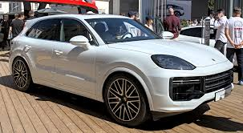
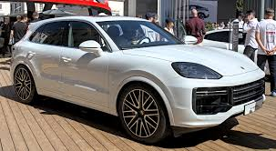

Dr. Ing. h.c. F. Porsche AG (полное название Doktor Ingenieur honoris causa Ferdinand Porsche Aktiengesellschaft — Акционерное общество почётного доктора инженерных наук Фердинанда Порше) – такое уж сложное название оказывается у знаменитого бренда «Porsche». Это немецкая автомобильная марка, история которой начинается еще в 1931 году. Ее основателем является Фердинанд Порше. Изначально, предприятие занималось выпуском узлов и агрегатов автомобильной промышленности. Деятельность предприятия числилась на хорошем счету. В тот период времени, Фердинанд Порше еще не задумывался о создании своего собственного массового серийного производства автомобилей, но тем не менее задатки он имел. Ведь именно он, еще до начала Второй мировой войны, создал всемирно известную легенду – «KdF-Wagen» (Kraft durch Freude — сила через радость «жук»), основа которого, в дальнейшем, была взята для разработки компанией «Volkswagen». Кроме того, многие разработки Порше еще со времен начальных этапов компании, были взяты за основу уже для более современных моделей.В годы Второй мировой войны, предприятие работало над выпуском военной техники. Были созданы танки «Тигр» и «Пантера». Также известно, что самоходную артиллерийскую установку (САУ) «Фердинанд» тоже разработал Порше. Выпуск САУ был небольшим, но все настолько часто употребляли это название, что сложилось мнение, будто производство было массовым.Но настал в компании и переломный момент. После войны Порше был обвинён в сговоре с нацистами и посажен в тюрьму почти на целый год. После того как он вышел, то был всеми отвергнут. На предприятии уже работали другие специалисты, на работу его брать не хотели, так как доверия уже не осталось. Но благодаря сыну Фердинанду Порше-младшему, все со временем наладилось. Ведь именно он взялся за возрождение компании с нуля.
1948 год ознаменовался выпуском первого гоночного автомобиля компании «Porsche». Это был «Porsche 356». Модель выпускалась аж до 1965 года и послужила основой для модели «Carrera».В 1951 году основатель компании Фердинанд Порше на 75-ом году жизни, увы, скончался, его здоровье сильно пошатнулось после пребывания в тюрьме. После смерти отца Порше-младший возглавил компанию и начал «поднимать ее с колен».На протяжении всей истории работы предприятия, все выпускаемые модели были достаточно дорогими. Это конечно соответствовало качеству, но тем не менее не оправдывало производителя. Но известна одна модель, которая не уступает по своим критериям более дорогим экземплярам – это выпущенная в 1996 году модель «Бокстер». Модель, которая по желанию может быть, как с мягким складывающимся, так и жестким верхом. Эта машина стала хорошей альтернативой для модели «Porsche 911».В начале 90-х годов экономический кризис затронул и «Porsche». Компания несла непоправимые убытки. Но наступила и белая полоса в работе предприятия. Для компании «Porsche» 1996 год стал достаточно подъёмным – дела шли очень даже хорошо, кроме того был выпущен миллионный автомобиль.Что же касается логотипа марки «Porsche». Известно, что автором логотипа стал Франц Ксавьер Раймшписс. Обозначения логотипа полностью несут дань немецким корням основателя компании. Изображённые чёрно-красные полоски и олени символизируют германские земли Баден-Вюртемберга, столицей которого и есть город Штутгарт. А вот конь, изображенный сейчас на каждой выпускаемой модели, означает родные конные фермы. До 1952 года использовалась только надпись «Porsche», и только потом к надписи добавили и логотип.
К числу интересных фактов относится и то, что ключ зажигания в моделях «Porsche» располагается слева. Это было задумано для гоночных автомобилей, ведь машину можно было завести еще до того, как полностью в нее сядешь. Это экономило несколько дополнительных секунд драгоценного времени.Кроме того, компания была достаточно разносторонней в своей деятельности. Помимо создания и выпуска собственной продукции, она предлагала свои разработки и другим компаниям. Так, например, наш отечественный ВАЗ 2108 можно считать совместной разработкой с «Porsche».Как бы там ни было, компания «Porsche» потерпела множество поражений, испытала достаточно взлетов, но смогла пробиться на мировой рынок. На данный момент, производятся автомобили класса «люкс» и внедорожники. Больше половины акций компании принадлежит роду Порше. Это одна из немногих компаний, которая находится во владении рода с самого ее основания. И это достойно нашего уважения.
 
